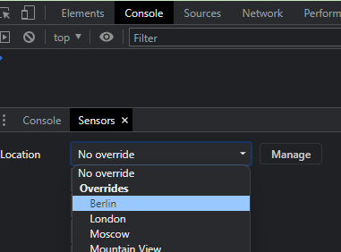
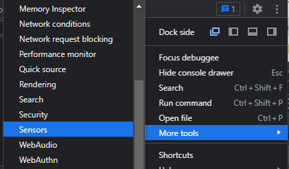

<section>
  <div class="block" data-type="text" data-name="title" style="left:102px;top:194px;width:1076px;height:auto;z-index:10">
    <h1>But what if you change location?</h1>
  </div>
  <div class="block" data-type="text" data-name="text-1" style="left:340px;top:288px;width:600px;height:auto;z-index:11">
    <p><span style="font-size:3.0em"><span style="color:rgb(204, 204, 204)">😒</span></span></p>
  </div>
  <div class="block fragment" data-type="image" data-name="image-1" data-keep-ratio data-fragment-index="0" style="left:760.636px;top:397px;width:398.728px;height:295.122px;z-index:12">
    
  </div>
  <div class="block fragment" data-type="image" data-name="image-2" data-keep-ratio data-fragment-index="0" style="left:67.264px;top:397px;width:505.067px;height:295.122px;z-index:13">
    
  </div>
  <div class="block fragment" data-type="line" data-name="arrow-1" data-x1="0" data-y1="0" data-x2="148.05705853418593" data-y2="0" data-color="#ffffff" data-width="8" data-start="none" data-end="arrow" data-fragment-index="0" style="left:595.091px;top:543.561px;width:148.0571px;height:0px;z-index:14"></div>
  <aside class="notes">We show that it's not really working in solution 155.68658720607631 - The sorting changes but the distance does not!</aside>
</section>
